On any classic car there are always a number of small jobs that need to be done. DKK 416K is no exception. This page records these minor jobs.
Bonnet Rubbers
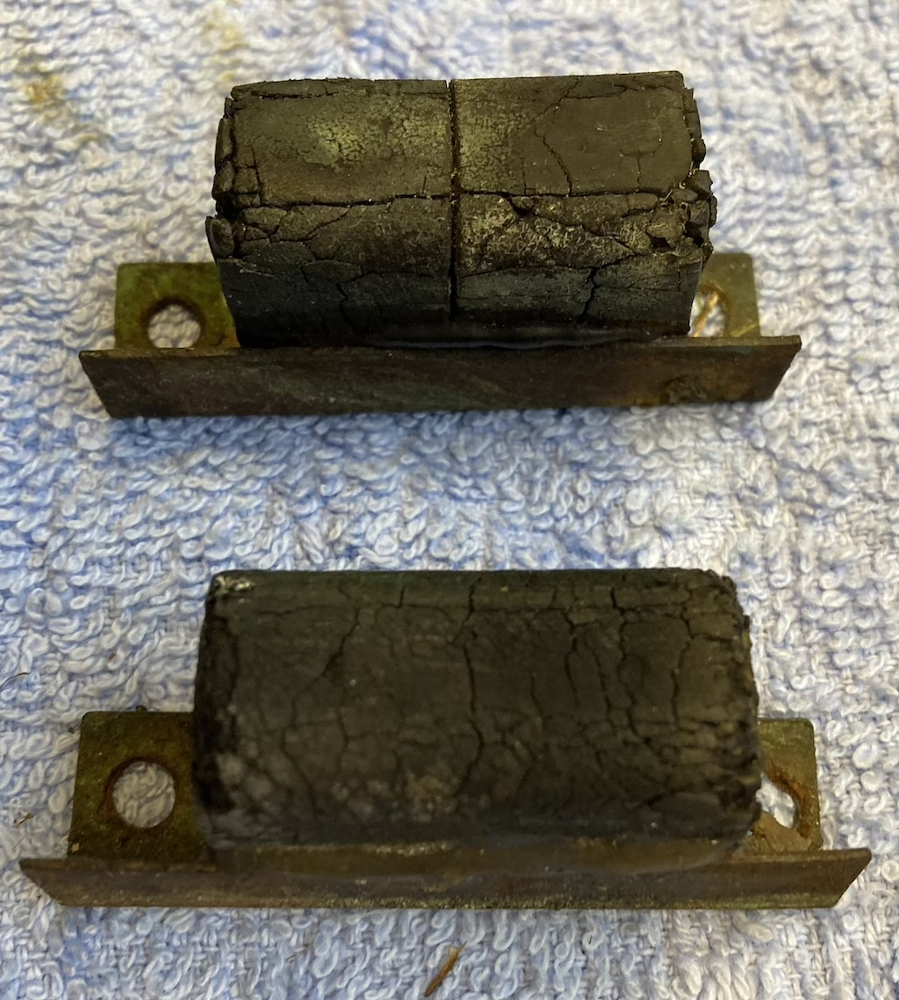
When I first bought DKK 416K I knew that the under-bonnet area was a bit grubby and the paint around the brake and clutch master cylinders had been removed, probably by spilt hydraulic fluid. The rubber seals around the bonnet were in good condition. However, the rubber 'stops', as can be seen in the photo, were hard and cracked.
This looked like a simple small job that could be done quickly, so I ordered new rubbers from the MG Owners Club.
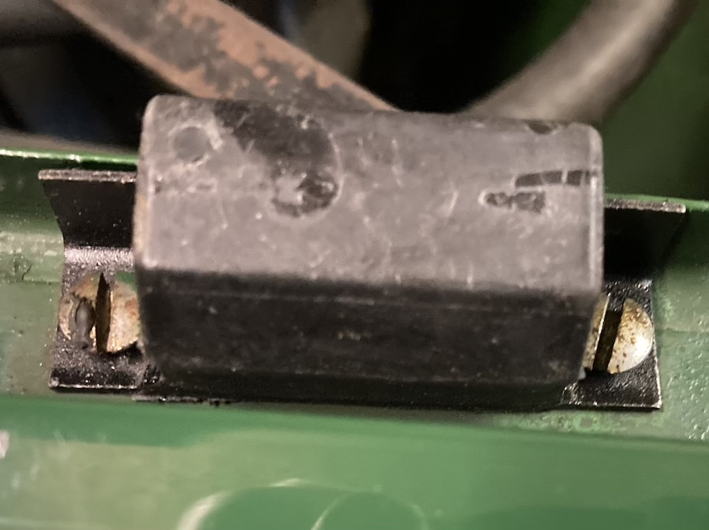
Each block was held in place by two self-tapping screws, which were easy to remove. It was similarly easy to fit the two new blocks, although the holes in the near-side block did not quite line up with the holes in the wing. So I had to elongate the holes in the new block. The photo shows one on the new blocks in place.Boot Lid Seal
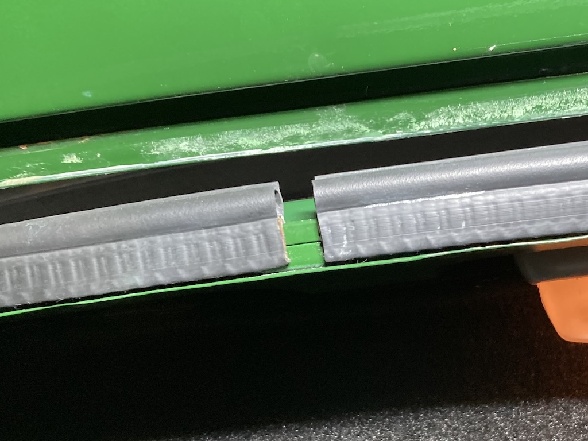
Within the page 'Some Details About DKK 416K' I noted that the boot lid seal had been fitted with a gap at the top and that this was a likely cause of dampness in the boot. So I removed the rubber seal, which seemed to be in good condition, and re-fitted it so that the gap was at the bottom.
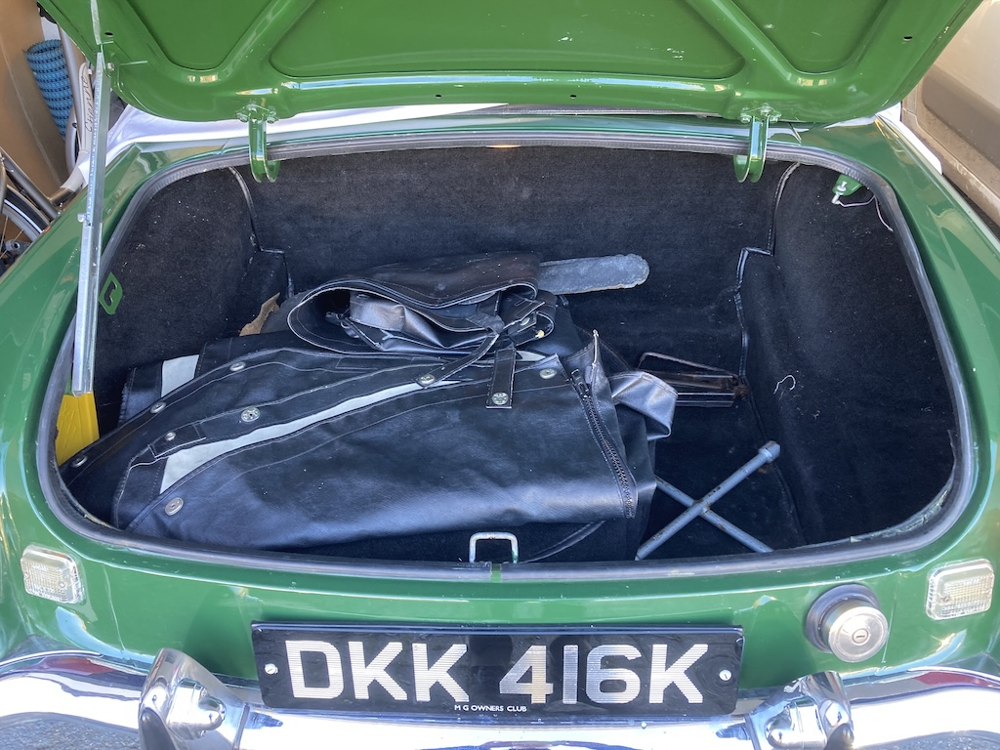
I had to use a rubber hammer to knock the seal fully on to the metal edge so that the boot would close. I put a light inside the boot and could not see any light 'leakage' at the top when the lid was closed.Battery Monitor
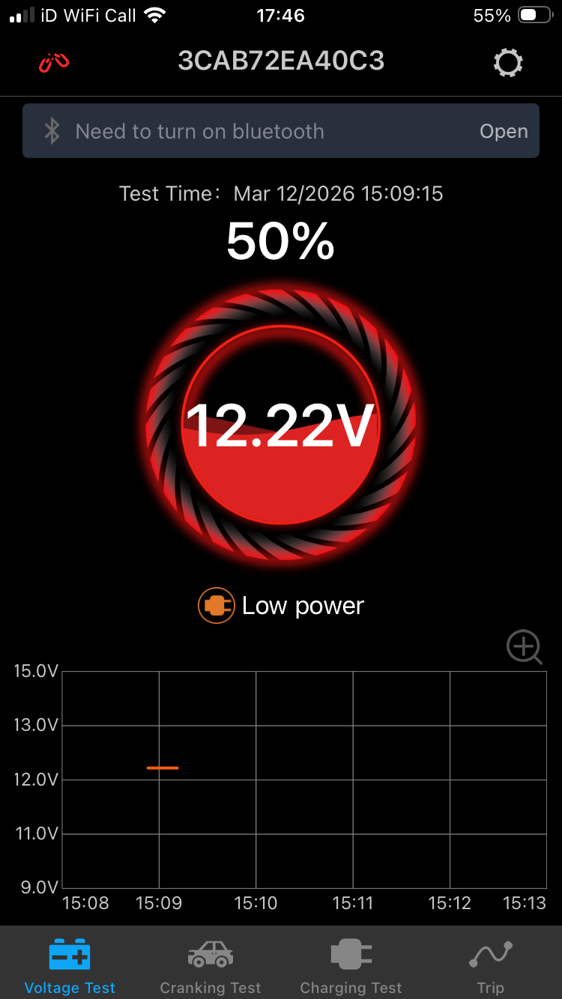
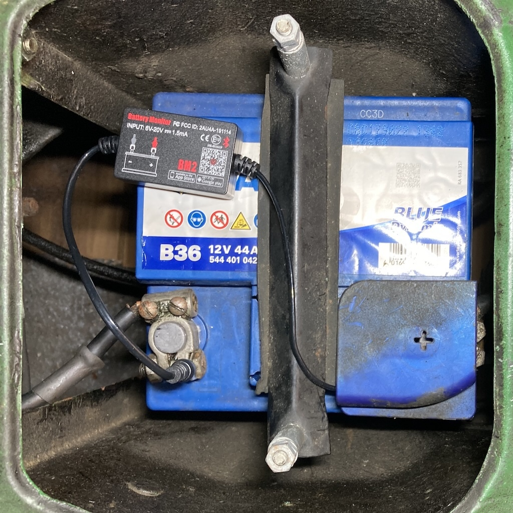
The two 6V batteries have been replaced with a single 12V battery, mounted in one of the two battery boxes. The boxes are behind the seats and to access them you firstly need to remove the carpet and then remove the the top panel. So access is tricky. When I bought the car there was a cable attached to the battery and hanging out from under the cover. Obviously for plugging in a charger.For the moment (until I find a compatable plug) I've removed the cable, but fitted a battery monitor. The monitor fits across the battery terminals and communicates with an app on my iPhone using Bluetooth. The idea is that it will tell me if I need to put the battery on a trickle charger.
The noted 50% charge increased to 99% after only a 13 mile run. So the alternator seems to be working fine. However, I wonder what drain the immobiliser puts on the battery.
Pedal Box Rust
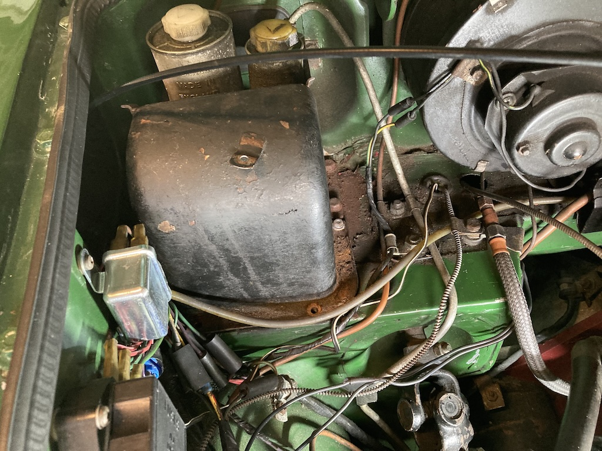
When I first inspected the car at Milestone Classics I noticed that someone had been a little slapdash with the brake and/or clutch fluid. The area around the pedal box, which is just in front of the master cylinders, was rusty, so clearly someone had spilt fluid, a known paint stripper, around that area.
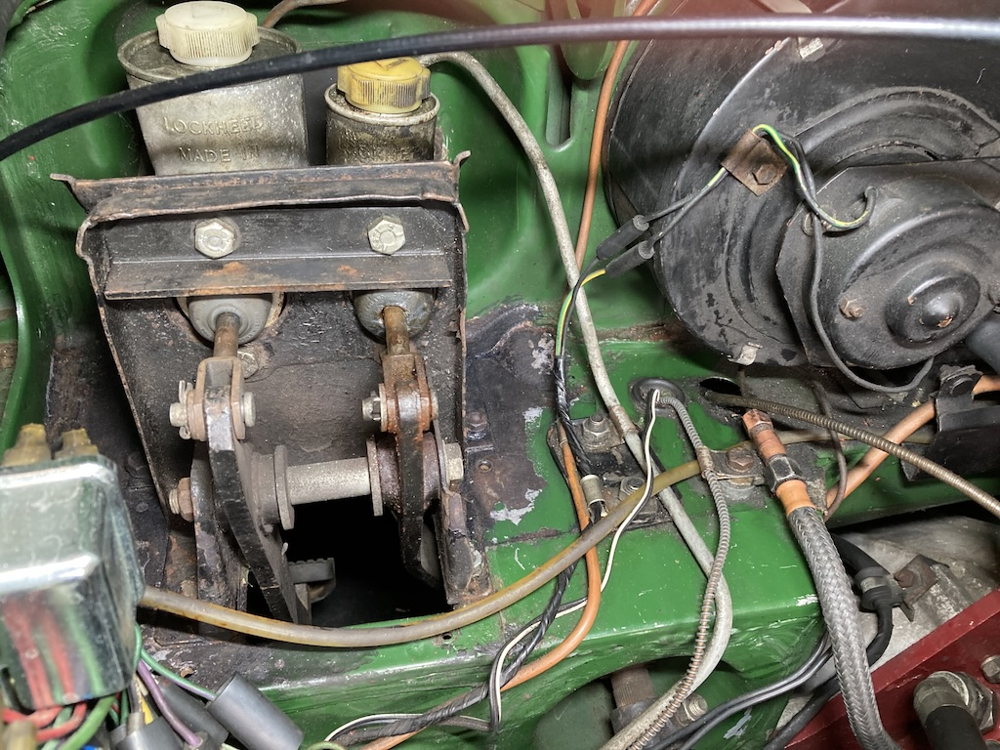
So I removed the pedal box cover and scraped away as much of the paint and rust as I could, using a flat-blade screwdriver and a small wire brush. Access, particularly to the off-side of the box, was difficult, but I was able to vacuum out the bits and the dust, although I did wipe it all over with a rag dampened with white spirit so as to remove any lingering dust. Then I brushed into the area (using an old toothbrush) some Kurust, which turned the rust blue and then black after a few hours.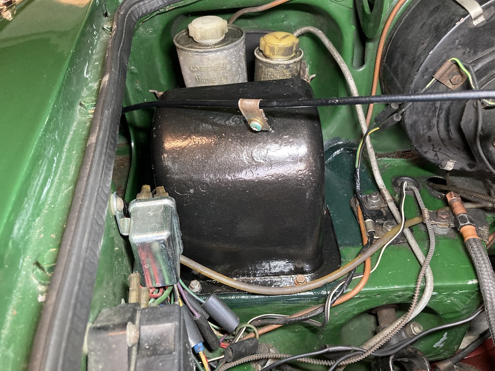
I also cleaned the inside and out of the pedal box cover and straightened the fixing point on its top. I had found the accelerator cable clip, which should have been fixed to the cover, loose around the cable when I removed the cover. I gave the cover the Kurust treatment before giving it three coats of black Hammerite from a spray can.I coated the now black metal around the pedal box with some dark green Hammerite paint. Again, access to the off-side of the box was difficult.
You can see from the photo that the Hammerite is much darker than the surrounding paint. My logic was that the Hammerite would resist any remaining rust and I can always over-coat it when I get some paint of the correct colour.
Air Filter Joiner
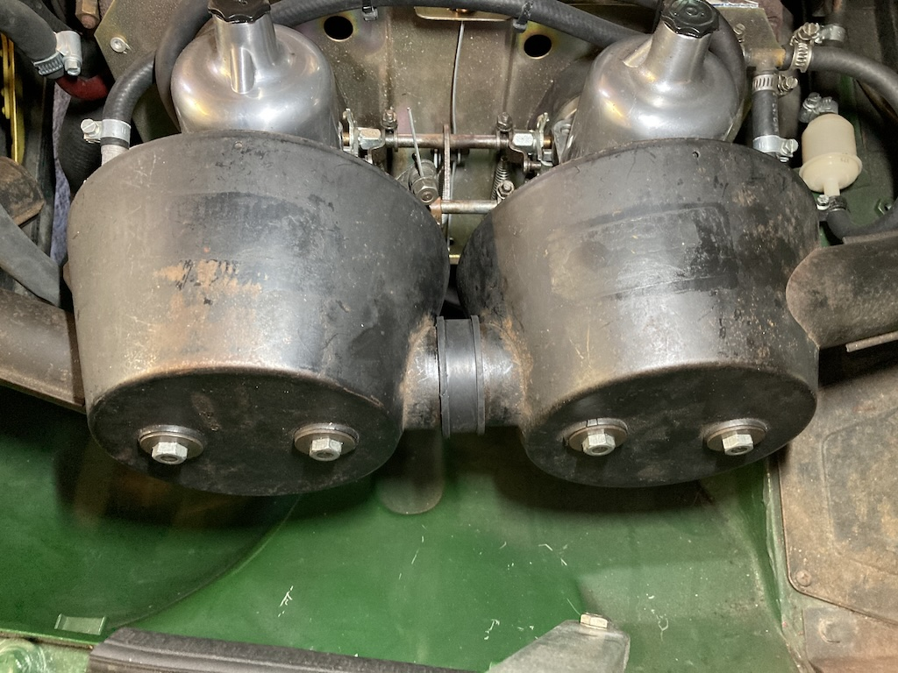
I removed the front air filter housing so as to check the state of the filter. In so doing I noticed that the short rubber hose that joins the filter bodies was cracked and quite loose. So I ordered a new one from the MGOC. Now you would think that replacing the rubber joiner would be a small and simple job. Small, yes, but simple, no.
When removing the front filer housing I was surprised that he bracket holding the outer case of the choke cable fell down, because the bracket also hold the filter housing bolts. So I decided in April 2026 to remove the rear filter housing so as to replace the rubber hose between the filters.
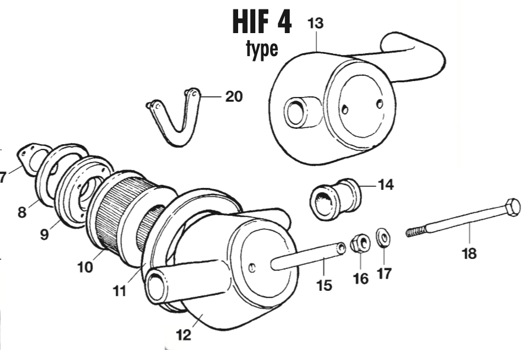
You can see in the parts diagram that the filter housing is item 13 and the rubber joiner is item 14. Then you can see all the other parts (excluding item 12) that make up the assembly. And they are all loose! That means that you have to hold them all together while trying to fit the two bolts (18) through the carburettor body and screw them into the bracket (20); joining the two air filter bodies via the rubber hose at the same time.You can see from the photo above that I eventually did it, but I will have to find a way of holding the parts together when I evenetually change the air filter elements.
Driver's Seat Runners
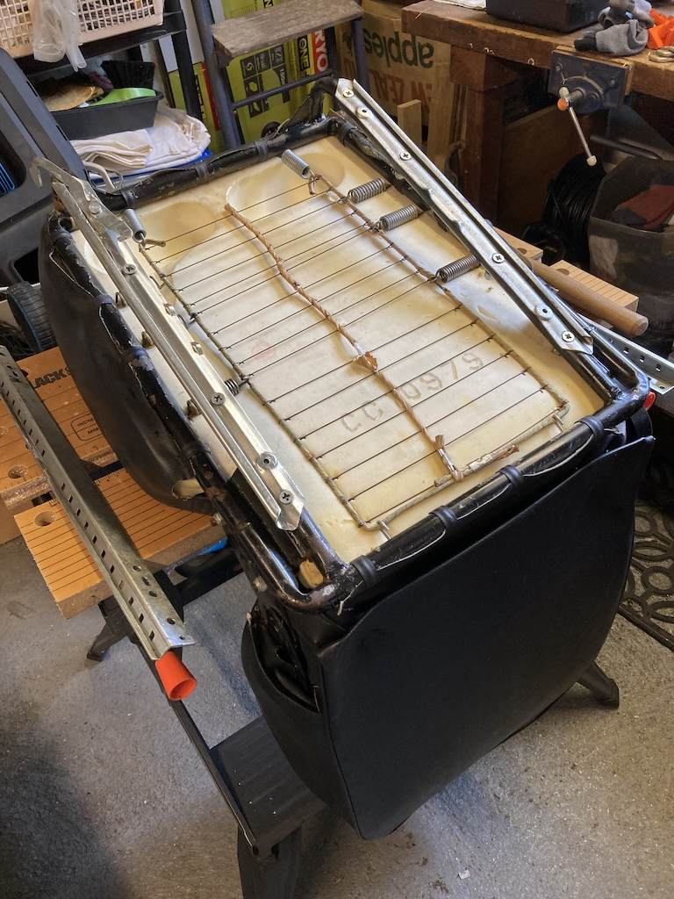
The back and forth slide action on the B's driver's seat was stiff when I bought the car. I tried putting some grease on the runners, but you can only get to the very ends of the runners. Then, when I got the car back from some body work being done, I found that the spring on the catch was missing! It happened that a friend was collecting his MGB from the MGOC Workshop and asked if they had a spring. It looks as though they found one in the bin! I then discovered that there was no way to attach the spring without removing the seat. So I did. Without the spring, I could force the lever over so as to get at the bolt that the lever covered when the seat was moved back and so removed the seat and put it upside down on my Workmate.
The middle runner was quite free, but the offside runner stuck near the front of the seat. Firstly I straightened any slight bends in the floor runner, but noticed that the seat runner (the one with the catch) was quite bent. I unbolted the runner from the seat frame and discovered that the runner was fine, but the tubular steel frame of the seat was bent. I can't think how the frame could become bent that way. I tried levering it with a length of wood, but it was not going to straighten, so I put two washers on the bolt, between the tubular frame and the runner. The floor runner then moved smoothly along the seat runner.
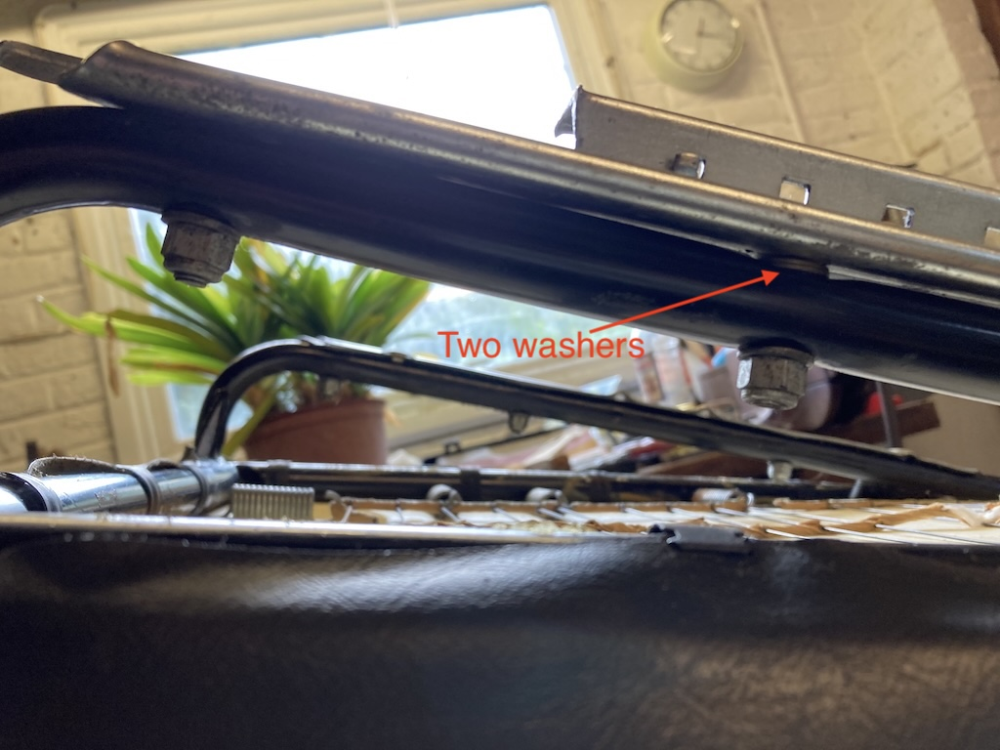
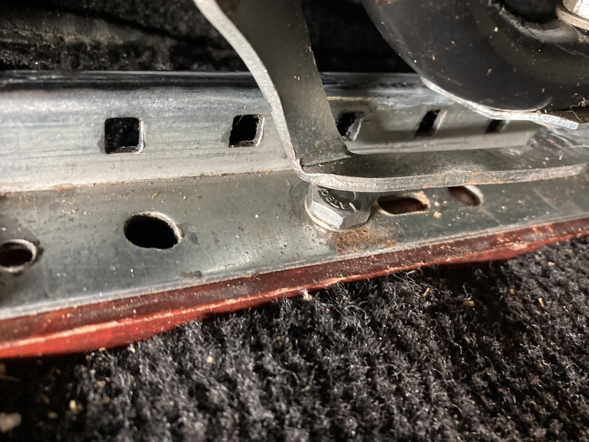
I squirted some lithium grease along the runners and then attempted to put the seat back in the car. Using a thick piece of bent wire I checked that the holes through the metal inserts in the wooden spacers could be made to line up with the threaded holes in the floor. Following John Twist's recommendations in one of his University Motors videos, I fitted the rear bolts first and then slid the seat back to fit the front bolts. The bolt on the middle runner went in fairly easily, but, as you can see in the photo, the catch lever is over the front offside bolt hole.
After loosening the other bolts (apart from the offside rear so as to keep the runner level), I bent the end of the catch lever so that it would miss the seat frame and hammered a wooden wedge under the catch to give space to get the bolt in. With the lever raised I managed to find the hole (after wiggling the seat a bit) and screwed in the bolt.
For a small job it took quite a lot of time. At least now, the seat slides easily back and forth. It is a lot easier to get in and out of the car with the seat slid right back.